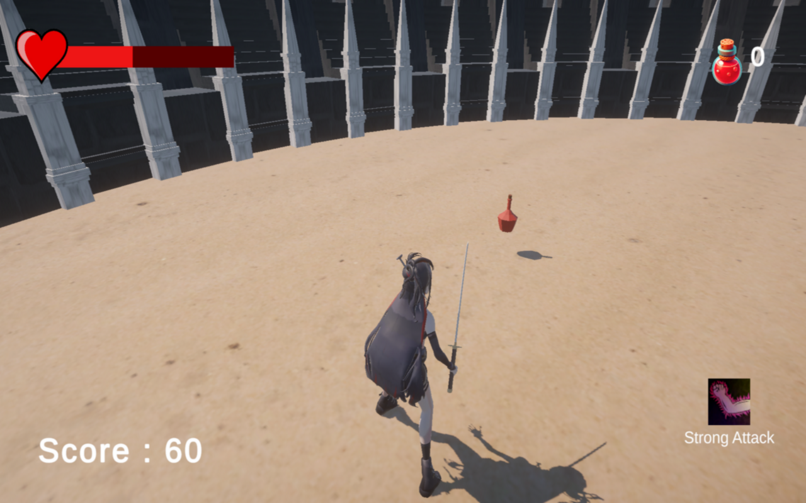
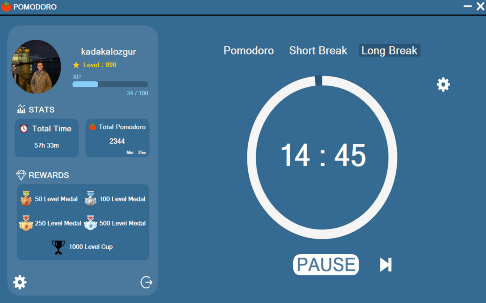
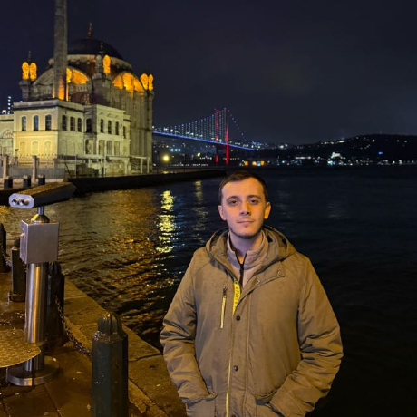

Attack Game
Bu oyun unity ile geliştirilmiş bir samuray temalı savaş oyunudur. Oyuncu, elindeki katana ile düşmanları öldürerek hayatta kalmaya çalışır. Oyun, karakterin ölmesiyle sona erer.
C#Unity
Backend sistemleri, oyun geliştirme ve yazılım mühendisliği alanlarında ürettiğim projeleri, deneyleri ve teknik çalışmaları bir araya getiren kişisel portföy platformu.
Kodun çalışması yetmez; kodun anlaşılır, sürdürülebilir ve geleceğe dayanıklı olması gerekir.
Üzerinde en çok zaman geçirdiğim ve en çok şey öğrendiğim iki proje.

Bu oyun unity ile geliştirilmiş bir samuray temalı savaş oyunudur. Oyuncu, elindeki katana ile düşmanları öldürerek hayatta kalmaya çalışır. Oyun, karakterin ölmesiyle sona erer.

Bu uygulama, C# Windows Forms ile geliştirilmiş oyunlaştırılmış bir Pomodoro uygulamasıdır. Kullanıcı, odaklanarak XP kazanır, seviye atlar ve çalışma istatistiklerini takip eder.

Merhaba! Ben Özgür Kadakal, yazılım mühendisliği öğrencisi olarak yazılım geliştirme ve teknolojiye olan tutkumla projeler üretiyorum. Problem çözme ve yeni teknolojileri öğrenme konularında sürekli kendimi geliştiriyorum. Amacım, yaratıcı ve etkili çözümlerle yazılım projelerine değer katmak ve profesyonel becerilerimi geliştirmektir.
Şu anda backend sistemleri, temiz kod prensipleri ve yazılım mimarisi üzerine kendimi geliştiriyorum. Boş zamanlarımda kişisel projeler üretiyor, açık kaynak projelere göz atıyor ve yeni teknolojileri denemekten keyif alıyorum.